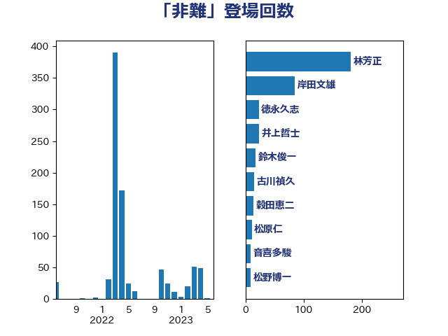

単語「非難」

| 林芳正 | 自由民主党 | 181 回 |
| 岸田文雄 | 自由民主党 | 85 回 |
| 徳永久志 | 立憲民主党 | 23 回 |
| 井上哲士 | 日本共産党 | 23 回 |
| 鈴木俊一 | 自由民主党 | 18 回 |
| 古川禎久 | 自由民主党 | 15 回 |
| 穀田恵二 | 日本共産党 | 14 回 |
| 松原仁 | 立憲民主党 | 11 回 |
| 音喜多駿 | 日本維新の会 | 9 回 |
| 松野博一 | 自由民主党 | 9 回 |
| 山下芳生 | 日本共産党 | 8 回 |
| 篠原豪 | 立憲民主党 | 7 回 |
| 梅村みずほ | 日本維新の会 | 7 回 |
| 小西洋之 | 立憲民主党 | 7 回 |
| 小田原潔 | 自由民主党 | 7 回 |
| 高橋光男 | 公明党 | 6 回 |
| 鈴木敦 | 国民民主党 | 6 回 |
| 足立康史 | 日本維新の会 | 6 回 |
| 山添拓 | 日本共産党 | 6 回 |
| 鈴木宗男 | 日本維新の会 | 5 回 |
| 萩生田光一 | 自由民主党 | 5 回 |
| 浜田聡 | NHK党 | 5 回 |
| 浅田均 | 日本維新の会 | 5 回 |
| 山口俊一 | 自由民主党 | 5 回 |
| 鈴木貴子 | 自由民主党 | 4 回 |
| 西銘恒三郎 | 自由民主党 | 4 回 |
| 芳賀道也 | 国民民主党 | 4 回 |
| 田村智子 | 日本共産党 | 4 回 |
| 斉藤鉄夫 | 公明党 | 4 回 |
| 青柳仁士 | 日本維新の会 | 3 回 |
| 金子道仁 | 日本維新の会 | 3 回 |
| 金子恵美 | 立憲民主党 | 3 回 |
| 道下大樹 | 立憲民主党 | 3 回 |
| 逢沢一郎 | 自由民主党 | 3 回 |
| 細田博之 | 自由民主党 | 3 回 |
| 福岡資麿 | 自由民主党 | 3 回 |
| 礒崎哲史 | 国民民主党 | 3 回 |
| 石橋通宏 | 立憲民主党 | 3 回 |
| 矢倉克夫 | 公明党 | 3 回 |
| 渡辺周 | 立憲民主党 | 3 回 |
| 水岡俊一 | 立憲民主党 | 3 回 |
| 櫻井周 | 立憲民主党 | 3 回 |
| 梅谷守 | 立憲民主党 | 3 回 |
| 本庄知史 | 立憲民主党 | 3 回 |
| 岡本あき子 | 立憲民主党 | 3 回 |
| 守島正 | 日本維新の会 | 3 回 |
| 嘉田由紀子 | 無所属 | 3 回 |
| 吉田宣弘 | 公明党 | 3 回 |
| 勝部賢志 | 立憲民主党 | 3 回 |
| 高良鉄美 | 無所属 | 2 回 |
| 馬場伸幸 | 日本維新の会 | 2 回 |
| 赤嶺政賢 | 日本共産党 | 2 回 |
| 谷合正明 | 公明党 | 2 回 |
| 藤田文武 | 日本維新の会 | 2 回 |
| 茂木敏充 | 自由民主党 | 2 回 |
| 羽田次郎 | 立憲民主党 | 2 回 |
| 笠井亮 | 日本共産党 | 2 回 |
| 石橋林太郎 | 自由民主党 | 2 回 |
| 石井浩郎 | 自由民主党 | 2 回 |
| 田島麻衣子 | 立憲民主党 | 2 回 |
| 田中健 | 国民民主党 | 2 回 |
| 猪口邦子 | 自由民主党 | 2 回 |
| 牧山ひろえ | 立憲民主党 | 2 回 |
| 滝波宏文 | 自由民主党 | 2 回 |
| 泉健太 | 立憲民主党 | 2 回 |
| 河西宏一 | 公明党 | 2 回 |
| 武見敬三 | 自由民主党 | 2 回 |
| 森本真治 | 立憲民主党 | 2 回 |
| 柴田巧 | 日本維新の会 | 2 回 |
| 枝野幸男 | 立憲民主党 | 2 回 |
| 松川るい | 自由民主党 | 2 回 |
| 東徹 | 日本維新の会 | 2 回 |
| 杉久武 | 公明党 | 2 回 |
| 本田顕子 | 自由民主党 | 2 回 |
| 本村伸子 | 日本共産党 | 2 回 |
| 有村治子 | 自由民主党 | 2 回 |
| 志位和夫 | 日本共産党 | 2 回 |
| 岩渕友 | 日本共産党 | 2 回 |
| 山田賢司 | 自由民主党 | 2 回 |
| 山東昭子 | 自由民主党 | 2 回 |
| 小沢雅仁 | 立憲民主党 | 2 回 |
| 宮崎勝 | 公明党 | 2 回 |
| 太栄志 | 立憲民主党 | 2 回 |
| 塩川鉄也 | 日本共産党 | 2 回 |
| 堀井巌 | 自由民主党 | 2 回 |
| 和田政宗 | 自由民主党 | 2 回 |
| 住吉寛紀 | 日本維新の会 | 2 回 |
| 仁比聡平 | 日本共産党 | 2 回 |
| 上田清司 | 国民民主党 | 2 回 |
| 三木圭恵 | 日本維新の会 | 2 回 |
| 一谷勇一郎 | 日本維新の会 | 2 回 |
| 鬼木誠 | 立憲民主党 | 1 回 |
| 高木毅 | 自由民主党 | 1 回 |
| 高木啓 | 自由民主党 | 1 回 |
| 高木かおり | 日本維新の会 | 1 回 |
| 青木愛 | 立憲民主党 | 1 回 |
| 青山大人 | 立憲民主党 | 1 回 |
| 階猛 | 立憲民主党 | 1 回 |
| 阿達雅志 | 自由民主党 | 1 回 |
| 野間健 | 立憲民主党 | 1 回 |
| 野田佳彦 | 立憲民主党 | 1 回 |
| 重徳和彦 | 立憲民主党 | 1 回 |
| 酒井庸行 | 自由民主党 | 1 回 |
| 豊田俊郎 | 自由民主党 | 1 回 |
| 谷川とむ | 自由民主党 | 1 回 |
| 谷公一 | 自由民主党 | 1 回 |
| 西村智奈美 | 立憲民主党 | 1 回 |
| 西村康稔 | 自由民主党 | 1 回 |
| 西岡秀子 | 国民民主党 | 1 回 |
| 藤巻健太 | 日本維新の会 | 1 回 |
| 藤岡隆雄 | 立憲民主党 | 1 回 |
| 藤原崇 | 自由民主党 | 1 回 |
| 舩後靖彦 | れいわ新選組 | 1 回 |
| 緒方林太郎 | 無所属 | 1 回 |
| 簗和生 | 自由民主党 | 1 回 |
| 笹川博義 | 自由民主党 | 1 回 |
| 竹内譲 | 公明党 | 1 回 |
| 竹内真二 | 公明党 | 1 回 |
| 稲津久 | 公明党 | 1 回 |
| 秋野公造 | 公明党 | 1 回 |
| 福田達夫 | 自由民主党 | 1 回 |
| 福島伸享 | 無所属 | 1 回 |
| 石川香織 | 立憲民主党 | 1 回 |
| 石川博崇 | 公明党 | 1 回 |
| 石井章 | 日本維新の会 | 1 回 |
| 石井準一 | 自由民主党 | 1 回 |
| 石井正弘 | 自由民主党 | 1 回 |
| 石井啓一 | 公明党 | 1 回 |
| 田村まみ | 国民民主党 | 1 回 |
| 田名部匡代 | 立憲民主党 | 1 回 |
| 玄葉光一郎 | 立憲民主党 | 1 回 |
| 牧原秀樹 | 自由民主党 | 1 回 |
| 片山大介 | 日本維新の会 | 1 回 |
| 清水貴之 | 日本維新の会 | 1 回 |
| 清水真人 | 自由民主党 | 1 回 |
| 浜田靖一 | 自由民主党 | 1 回 |
| 浜地雅一 | 公明党 | 1 回 |
| 河野義博 | 公明党 | 1 回 |
| 河野太郎 | 自由民主党 | 1 回 |
| 比嘉奈津美 | 自由民主党 | 1 回 |
| 武部新 | 自由民主党 | 1 回 |
| 櫛渕万里 | れいわ新選組 | 1 回 |
| 榛葉賀津也 | 国民民主党 | 1 回 |
| 森屋隆 | 立憲民主党 | 1 回 |
| 柳ヶ瀬裕文 | 日本維新の会 | 1 回 |
| 末松義規 | 立憲民主党 | 1 回 |
| 早坂敦 | 日本維新の会 | 1 回 |
| 日下正喜 | 公明党 | 1 回 |
| 平沼正二郎 | 自由民主党 | 1 回 |
| 平将明 | 自由民主党 | 1 回 |
| 岡本三成 | 公明党 | 1 回 |
| 山本順三 | 自由民主党 | 1 回 |
| 山本太郎 | れいわ新選組 | 1 回 |
| 山本博司 | 公明党 | 1 回 |
| 山崎誠 | 立憲民主党 | 1 回 |
| 山井和則 | 立憲民主党 | 1 回 |
| 小野田紀美 | 自由民主党 | 1 回 |
| 小野泰輔 | 日本維新の会 | 1 回 |
| 小熊慎司 | 立憲民主党 | 1 回 |
| 小池晃 | 日本共産党 | 1 回 |
| 小山展弘 | 立憲民主党 | 1 回 |
| 小宮山泰子 | 立憲民主党 | 1 回 |
| 小倉將信 | 自由民主党 | 1 回 |
| 寺田静 | 無所属 | 1 回 |
| 宮本周司 | 自由民主党 | 1 回 |
| 宮口治子 | 立憲民主党 | 1 回 |
| 安江伸夫 | 公明党 | 1 回 |
| 太田房江 | 自由民主党 | 1 回 |
| 大家敏志 | 自由民主党 | 1 回 |
| 大塚耕平 | 国民民主党 | 1 回 |
| 大塚拓 | 自由民主党 | 1 回 |
| 塩田博昭 | 公明党 | 1 回 |
| 塩村あやか | 立憲民主党 | 1 回 |
| 堀場幸子 | 日本維新の会 | 1 回 |
| 和田義明 | 自由民主党 | 1 回 |
| 和田有一朗 | 日本維新の会 | 1 回 |
| 吉良州司 | 無所属 | 1 回 |
| 古賀友一郎 | 自由民主党 | 1 回 |
| 古賀之士 | 立憲民主党 | 1 回 |
| 勝目康 | 自由民主党 | 1 回 |
| 務台俊介 | 自由民主党 | 1 回 |
| 加田裕之 | 自由民主党 | 1 回 |
| 八木哲也 | 自由民主党 | 1 回 |
| 佐藤正久 | 自由民主党 | 1 回 |
| 伊藤俊輔 | 立憲民主党 | 1 回 |
| 伊波洋一 | 無所属 | 1 回 |
| 伊東良孝 | 自由民主党 | 1 回 |
| 井上信治 | 自由民主党 | 1 回 |
| 丹羽秀樹 | 自由民主党 | 1 回 |
| 串田誠一 | 日本維新の会 | 1 回 |
| 中谷真一 | 自由民主党 | 1 回 |
| 中川宏昌 | 公明党 | 1 回 |
| 中島克仁 | 立憲民主党 | 1 回 |
| 中山展宏 | 自由民主党 | 1 回 |
| 下条みつ | 立憲民主党 | 1 回 |
| 上杉謙太郎 | 自由民主党 | 1 回 |
| 上月良祐 | 自由民主党 | 1 回 |
| たがや亮 | れいわ新選組 | 1 回 |